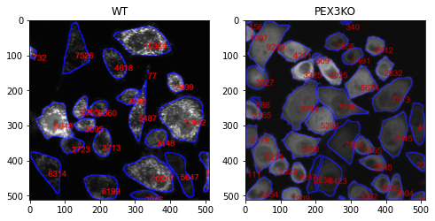
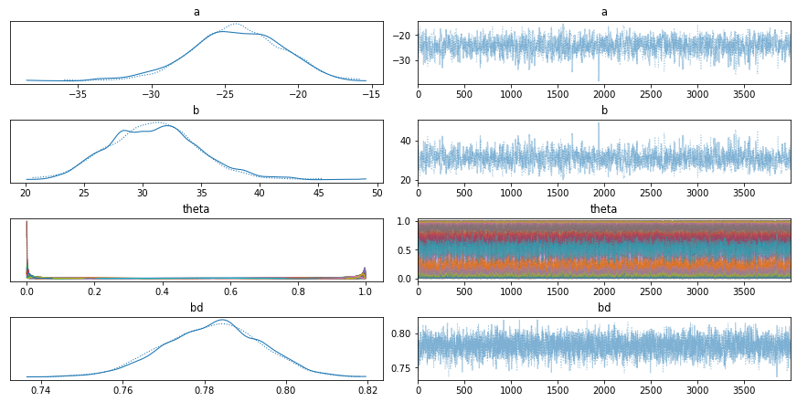

Naive_Bayes_Classifier
We will use AIPS platform to distinguish between peroxisome-positive and peroxisome-negative cells by imaging GFP-expressing Catalse. To model peroxisomes, we will use Pex13 mutant cells, with GFP-cat signal spread throughout the cytoplasm.
The AIPS_cellpose module is used for segmenting input image cytoplasmic signal.
from AIPyS.AIPS_cellpose import granularityMesure_cellpose
Segment cells and measure area of each cell which is marked in red. In the cellular level, granularity will be analysed.
wt, WTtable, WTdf = granularityMesure_cellpose(file = fileNmae[1],path = path, classLabel = 0,
outPath = None, clean = None, outputTableName = None,saveMode=False,intensity = 1)
kO, kOtable, kOdf = granularityMesure_cellpose(file = fileNmae[0],path = path, classLabel = 0,
outPath = None, clean = None, outputTableName = None,saveMode=False, intensity = 1)
fig, ax = plt.subplots(1, 2, figsize=(8, 8))
ax[0].imshow(wt, cmap=plt.cm.gray)
ax[0].title.set_text('WT')
ax[1].imshow(ko, cmap=plt.cm.gray)
ax[1].title.set_text('PEX3KO')

The method of analysis of granularity examines the effect of openings of increasing size on images of differing granularity. The volume of the open image is calculated as the sum of all pixels in each step, and the difference in volume between these successive steps is the granular spectrum. This granular spectrum is then normalized to the total volume (integrated intensity) of the image in order to create a diagram that displays how the different sizes of opening affect the images. Phenotype are assigned for training the model. For example, 1 for Pex3-KO and 0 for the WT cells. Marge Granularity Table from both classes and plot Granularity spectrum.
| index | kernel | Signal intensity (ratio) | classLabel | |
|---|---|---|---|---|
| 0 | 0 | 0 | 1.000000 | 0 |
| 1 | 1 | 2 | 0.890134 | 0 |
| 2 | 2 | 8 | 0.656016 | 0 |
| 3 | 3 | 14 | 0.513061 | 0 |
| 4 | 4 | 21 | 0.381961 | 0 |
| 5 | 5 | 27 | 0.282762 | 0 |
| 6 | 6 | 34 | 0.221506 | 0 |
| 7 | 7 | 40 | 0.190235 | 0 |
| 8 | 8 | 47 | 0.157380 | 0 |
| 9 | 9 | 53 | 0.139901 | 0 |
| 10 | 10 | 60 | 0.127143 | 0 |
| 11 | 0 | 0 | 1.000000 | 1 |
| 12 | 1 | 2 | 0.951306 | 1 |
| 13 | 2 | 8 | 0.848492 | 1 |
| 14 | 3 | 14 | 0.732633 | 1 |
| 15 | 4 | 21 | 0.637133 | 1 |
| 16 | 5 | 27 | 0.482065 | 1 |
| 17 | 6 | 34 | 0.363300 | 1 |
| 18 | 7 | 40 | 0.292876 | 1 |
| 19 | 8 | 47 | 0.254713 | 1 |
| 20 | 9 | 53 | 0.240333 | 1 |
| 21 | 10 | 60 | 0.232534 | 1 |
Merging the granularity tables and ploting granularity spectrom over time:
python GranPerCell = pd.concat((WTgTable,kOgTable))
<matplotlib.lines.Line2D at 0x1e217f56488>

Maximum separation on kernel 13, with a vertical dashed line.
A peroxisome logistic regression classifier is a machine learning algorithm that is used to classify items based on their peroxisomal characteristics. This type of classifier can help identify items that are likely to be located within a peroxisome, as well as help to identify potential biomarkers for diseases associated with peroxisomal dysfunction. The classifier is trained on a dataset consisting of features associated with peroxisomes and then used to predict the presence or absence of a particular feature in an unknown sample. By training the classifier on a range of features, it is able to accurately predict the presence or absence of a feature in a given sample.
Here is the The logistic model used for classify peroxisome:
The exponential decay equation
where t is the current value of the decaying quantity, t0 is the initial value of the decaying quantity, a is a constant, b is the decay rate and kernel is the time interval over which the decay takes place.
The decay rate, b, is calculated by taking the natural logarithm of the ratio of the current value to the initial value and dividing it by the kernel.
The Decay formula logistic model is a mathematical expression used to model the behaviour of a system over time. It is based on the idea that the rate of change in the system is proportional to the current state of the system. The equation is represented as:
Where:
{math}\theta is the output of the model, which describes the rate of change in the system.
The Normal distribution prior assigned to $\alpha$ and $\beta$ had a mean of 0 and a standard deviation of 10, which can be adjusted to control the behavior of the model.
{math}t is the current state of the system.
{math}t0 is the initial state of the system.
{math}Kernel is the rate of change in the system.
The logistic part of the equation is used to ensure that the output is within a certain range. This range is defined by the parameters {math}a and {math}\beta.
As demonstrated above, the granularityMesure_cellpose function performs a granularity analysis on the input image, producing a granularity table, e.g.
| labeledCell | kernel | intensity | classLabel | |
|---|---|---|---|---|
| 0 | 0 | 0 | 1.000000 | 0 |
| 1 | 0 | 2 | 0.816656 | 0 |
The data folder contains CSV files that have been generated by the granularityMesure_cellpose tool, which can be used to train a Bayes model.
Here, model is trained using 700 labeled single cells that have been segmented from 5 images.
:::{note} The Bayesian classifier requires two CSV files, one for class 0 (phenotype) and one for class 1 (wild type) e.g. norm.csv, pheno.csv :::
from AIPyS.Baysian_training import bayesModelTraining
pathIn = 'data'
files = glob.glob(pathname=pathIn+"\*.csv")
Table_MergeFinel, Table_MergeFinelFitelrd, rate, y_0, trace = bayesModelTraining(files = files, kernelSize = 5, pathOut = None,reportFile = None)
Next, the similarities and differences between the classes are identified and evaluated.
3.11.5
Auto-assigning NUTS sampler...
Initializing NUTS using jitter+adapt_diag...
Sequential sampling (2 chains in 1 job)
NUTS: [b, a]
Sampling 2 chains for 4_000 tune and 4_000 draw iterations (8_000 + 8_000 draws total) took 98 seconds.
The number of effective samples is smaller than 25% for some parameters.

The trace-plot in pymc3 is a graphical representation of the sampling results obtained from a MCMC algorithm. It plots the sampled values of the parameters over the iterations, allowing the user to assess the convergence of the algorithm, as well as the overall distribution of the samples. The trace-plot can also be used to identify potential divergences, which indicate that the MCMC algorithm may not have properly converged. The trace-plot can also be used to identify potential areas of improvement, such as increasing the number of samples or adjusting the step size of the chain.
array([[<AxesSubplot:title={'center':'a'}>,
<AxesSubplot:title={'center':'a'}>],
[<AxesSubplot:title={'center':'b'}>,
<AxesSubplot:title={'center':'b'}>],
[<AxesSubplot:title={'center':'theta'}>,
<AxesSubplot:title={'center':'theta'}>],
[<AxesSubplot:title={'center':'bd'}>,
<AxesSubplot:title={'center':'bd'}>]], dtype=object)
<Figure size 216x216 with 0 Axes>

Model evaluation The boundaries between classes are determined by the logistic function, which is used to calculate the probability of a data point belonging to a particular class. The model’s parameters are estimated based on the training data, and the model is then used to make predictions on unseen data.
Text(0, 0.1, 'b :30.99')